Raspberry Piは安価で購入できるシングルボードコンピュータです。さまざまなバージョンがありますが、現時点での最新かつ最速のものはRaspberry Pi 4シリーズです。
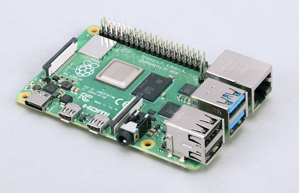
なお、上記の画像はラズパイのProductsから取得しました。
ラズパイは見た目通り、コンピュータ本体のみで販売されています。そのため、通常のコンピュータに必要な入出力装置や電源コードは含まれていません。ただ、一部の販売形態では、電源アダプターなどがセットになっている商品もあります。今回は、このようなパッケージされたものを購入しました。が、単体でラズパイを用意した場合は、これらの外部機器を別途自分で用意する必要があります。
ちなみに、リモート経由ではなくラズパイ単体でセットアップを実行する場合は、キーボードやマウスを有線のものにすることをオススメします。これらは「単純につなげるだけで使える」ので、ドライバーの用意やらインストールやらを考えなくて良いというのが理由です。自分は、大昔にどこかで買った有線のデバイスを引っ張り出してきました。
上記に挙げたリストのうち、LANケーブルなどは無線接続を設定するなどすれば必要ありません。そのため、ラズパイ単体でセットアップするなら上位5つが必須です。
しかし、VNC（Virtual Network Computing）を利用することでリモート経由でのインストールを実施することで、上記の入出力装置を省略し最低限「電源アダプターと記憶媒体」さえあればラズパイのセットアップができます。
ここでは、ラズパイとMacとVNCを使ったリモート経由によるセットアップの手順を記述します。
今回のセットアップは以下の環境で実施しました。
現在のラズパイにインストール可能なOSの最新版はBullseyeですが、今回はLegacyOSのBusterをインストールします（理由は後述）。
リモート経由なら「デバイスは不要」と言いつつも、さすがに最低限のものは用意する必要があります。
MicroSDや電源アダプターがセットになっている商品も販売されています。ですので、自分で選定するのが手間だったり、とくにこだわりがない場合はセットを購入する方が楽かもしれません。場合によっては、ラズパイ用のケースやOSがインストール済みのMicroSDもセットに含まれていることもあります。
その他に、有線でネットワークに接続する場合はLANケーブル、音声の入出力を行いたい場合はスピーカーなども必要になります。今回はいったん無線でネットワークに接続し、音声の入出力は行わない前提で話を進めます。つまり、LANケーブルとスピーカーなどは利用しません。
大まかな手順は以下の通りです。
この手順を、ディスプレイやキーボードなどのデバイスをラズパイに接続することなく、Macとラズパイだけで行います。
通常、MicroSDにラズパイ用のOSをインストールする必要があります。ただし、OSがすでにインストールされているMicroSDがセットになった商品を購入した場合は、この手順をスキップできますので読み飛ばしてください。
MicroSDにOSをインストールしておけば、ラズパイの本体を変えても流用できるため、便利です。
OSのインストールを行うには、まずRaspberry Pi Imagerを端末にインストールします。このソフトウェアはMicroSDにOSをインストールするために必要です。サイトにアクセスしMac用のソフトウェアをダウンロードしてインストールします。インストール後、端末にMicroSDをカードリーダー経由で挿入します。
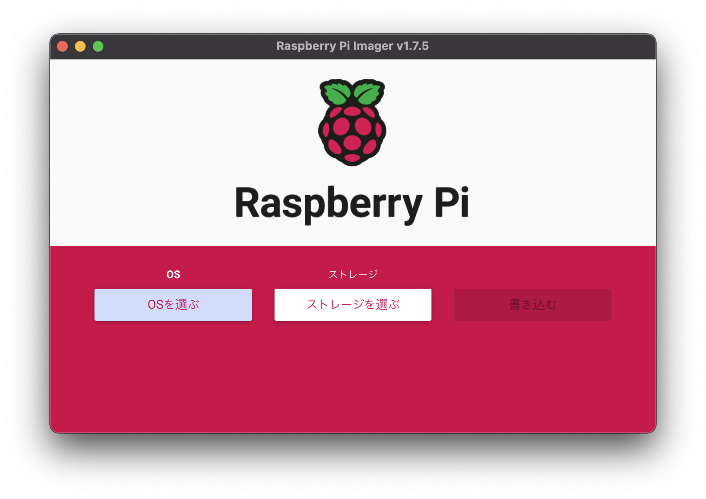
起動すると、上記の画面が表示されます。ここでインストールしたいOSやインストール先を選択します。
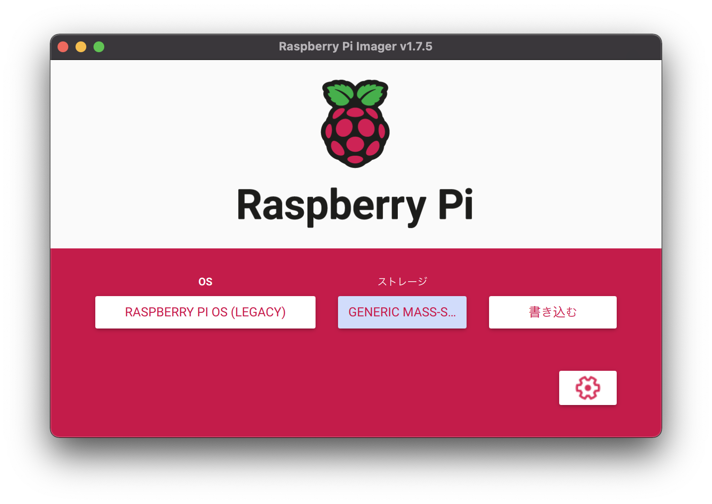
今回はこのように設定しインストールします。通常は最新の安定版のOSを選択しますが、ここではLegacy版を選択しています。ストレージ選択では、複数の選択肢が表示されることがありますので、誤った場所にインストールしないように注意してください。
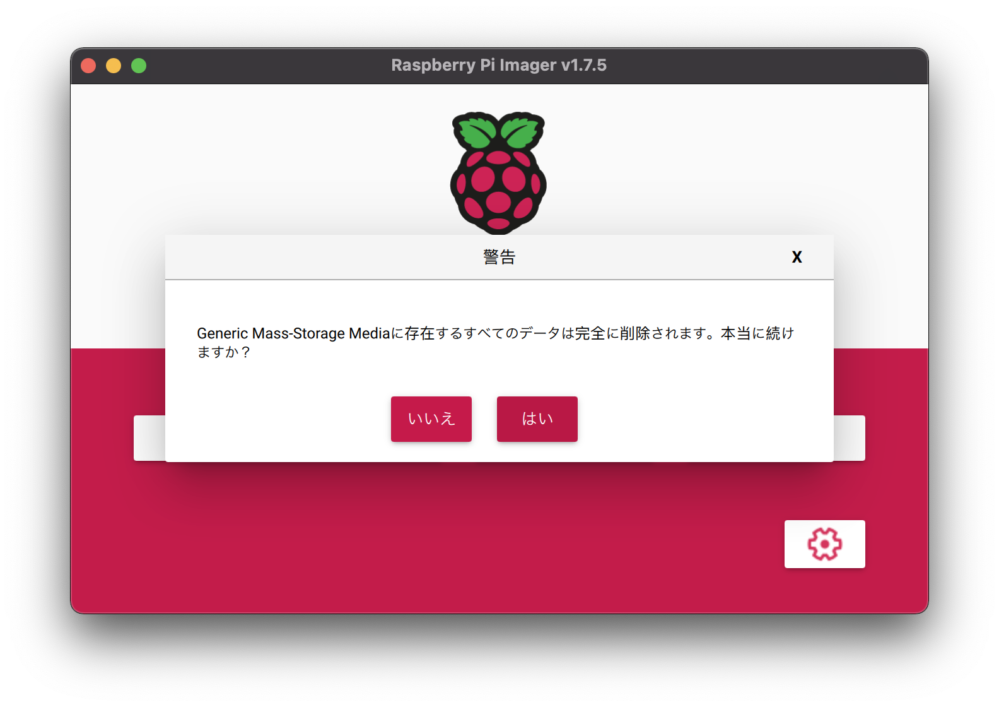
OSとインストール先を選択したら書き込みが可能になります。「書き込み」を選択すると、注意メッセージが表示されますので、「はい」を選択して処理を開始します。端末によっては「ソフトウェアがデバイスに書き込もうとしてるけどいいの？」といった確認が出る場合がありますので、パスワードを入力するかOKを選択して処理を進めます。
ちなみに、右下の歯車アイコンを押すとインストールの設定が変更できますが、今回は別の手順で実施するのでここではMicroSDに書き込むだけで問題ありません。ただし、あとの作業でSSHを使いラズパイへ接続するので、ホスト名くらいは確認しておいてもいいかもしれません。
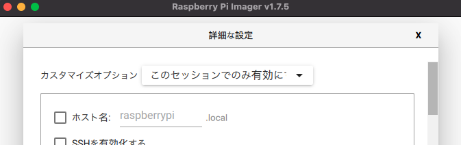
歯車アイコンを押すといくつかの項目が表示されます。このうち、「ホスト名」はあとでSSH接続する際に必要になるのでメモしておくことをオススメします。デフォルトはraspberrypi.localです。複数のラズパイが存在する場合、同じホスト名だとSSH接続できません。そのため、この段階で任意のホスト名に変更しておくことをオススメします。もちろん、変更したあとのホスト名をメモしておくことをお忘れなく。
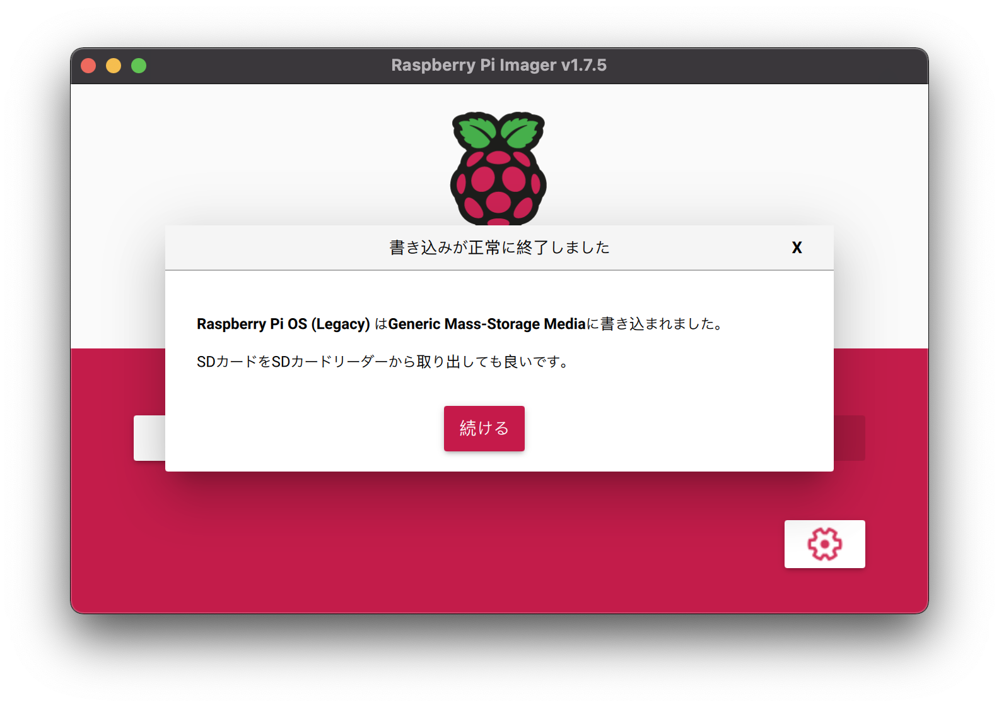
処理が完了すると、上記のような表示になります。これでOSのインストールが完了しました。
通常、OSのインストールが終わったMicroSDをラズパイに差し込んで電源を接続すると、自動的にMicroSD内のOSを読み込んでシステムが起動します。ただし、今回はリモートでセットアップを行うため、もう少し端末で作業が必要です。
まず、ここでMicroSDが端末から参照できるか確認します。先ほどのOSインストールが完了した時点で、MicroSDが取り外し可能になっているかもしれません。この場合、Finderの左ペインに表示されているデバイスの一覧に、SDカードに該当するデバイスが表示されていません。その場合は、一度物理的に取り外してから再度Macに差し込みます。もともと表示される場合は、とくに操作は必要ありませんので、そのまま作業を継続してください。
今回は無線LANを利用するため、無線LANによるネットワーク接続ができるようにMacから設定ファイルを変更します。
まず、wpa_supplicant.confという名前のファイルをMicroSDのルートに作成します。
cd /Volumes
cd boot
touch wpa_supplicant.confファイルの作成方法はいくつかありますが、ここではコンソールからコマンドでファイルを作成します。macOSのFinderでは右クリックで新規ファイルの作成ができないためです。
なお、macOSでMicroSDなどの外部記憶媒体にアクセスする場合は、/Volumesフォルダ内に存在する該当のデバイス（今回はbootという名前のデバイス）にアクセスします。
ctrl_interface=DIR=/var/run/wpa_supplicant GROUP=netdev
update_config=1
country=JP
network={
ssid="<<SSID>>"
psk="<<PASSWORD>>"
}作成したファイルには、上記のような内容を記述します。SSIDやパスワードはルーター本体か添付書類に記述されているはずですので、それをそのまま書き写します。
なお、SSIDおよびパスワードを記述する際はダブルクォーテーションが必要ですので注意してください。また、ラズパイを無線に接続する場合は2.4GHz帯である必要がありますので、5GHz帯のSSIDを設定しても動作しません。
設定はこれで完了ですが、このファイルに誤りがあると以降の手順でリモート接続ができなくなる可能性があるので、内容に誤りがないかよく確認してください。
次にSSHを有効化します。これは単純にsshという名前の空ファイルを、MicroSDのルートに作成するだけです。
cd /Volumes
cd boot
touch sshとくになにかを記述する必要はありません。純粋に空ファイルを作りましょう。
これまでの手順でOSのインストールおよびネットワーク設定が完了したので、MicroSDをラズパイに挿し、電源アダプターを接続してラズパイを起動します。
電源に接続したら、OSが読み込まれてシステムが起動します。この際、「PWRIN」周辺にある赤いLED（PWR LED）と黄色いLED（ACT LED）が点滅するはずです。画面がないので起動の状況がわかりにくいですが、赤いLEDが常時点灯し、黄色いLEDがたまにチカチカ点滅するようになると、システムが起動していると判断できます。今回は3分ほど待ちましたが、もっと早くてもいいかもしれません。
ssh pi@raspberrypi.localラズパイが起動したら、上記のコマンドを実行します。これはSSHを使ってラズパイに接続することを意味します。
The authenticity of host 'raspberrypi.local (xxxx:xxxx:xxxx:xxxx:xxxx:xxxx:xxxx:xxxx)' can't be established.
ECDSA key fingerprint is SHA256:xxxxxxxxxxxxxxxxxxxxxxxxxxxxxxxxxxxxxxxxxxx.
Are you sure you want to continue connecting (yes/no/[fingerprint])? ラズパイに接続する際に、上記のようなメッセージが表示されることがあります。この場合は、一度 yes と入力してください。
Warning: Permanently added 'raspberrypi.local,xxxx:xxxx:xxxx:xxxx:xxxx:xxxx:xxxx:xxxx' (ECDSA) to the list of known hosts.
Connection closed by xxxx:xxxx:xxxx:xxxx:xxxx:xxxx:xxxx:xxxx port 22するとワーニングメッセージが表示され、ラズパイとの接続が切れてしまいます。これは、以前にラズパイに接続した際のキーが残っており、それが問題を引き起こしています。これを解消するには、既存のキーを削除します。
ssh-keygen -R raspberrypi.local上記のコマンドを実行して既存のキーを削除します。その後、再度 ssh でアクセスを試みます。
The authenticity of host 'raspberrypi.local (xxxx:xxxx:xxxx:xxxx:xxxx:xxxx:xxxx:xxxx)' can't be established.
ECDSA key fingerprint is SHA256:xxxxxxxxxxxxxxxxxxxxxxxxxxxxxxxxxxxxxxxxxxx.
Are you sure you want to continue connecting (yes/no/[fingerprint])? 同様に、再度 yes と入力してください。
pi@raspberrypi.local's password: するとパスワードの入力を求められます。ここでは、raspberry と入力します。
Linux raspberrypi 5.10.103-v7+ #1529 SMP Tue Mar 8 12:21:37 GMT 2022 armv7l
The programs included with the Debian GNU/Linux system are free software;
the exact distribution terms for each program are described in the
individual files in /usr/share/doc/*/copyright.
Debian GNU/Linux comes with ABSOLUTELY NO WARRANTY, to the extent
permitted by applicable law.
Last login: xxx
SSH is enabled and the default password for the 'pi' user has not been changed.
This is a security risk - please login as the 'pi' user and type 'passwd' to set a new password.
pi@raspberrypi:~ $ これでSSH経由でラズパイにログインできました。
$ whoami
piプロンプトが変更されていますが、現在は pi ユーザーでログインしていることがわかります。
この情報でMacからラズパイに接続していることがわかります。この設定はラズパイ用OSのデフォルト設定ですが、他のバージョンのOSでも同様のはずです。
SSH is enabled and the default password for the 'pi' user has not been changed.
This is a security risk - please login as the 'pi' user and type 'passwd' to set a new password.なお、デフォルト設定を使用している場合、悪意のあるユーザーが不正アクセスを行うリスクがあるため、できるだけ早くパスワードを変更することが重要です。
ちなみに、この段階で音声ジャックにスピーカーやイヤホンを接続すると、初回起動時に合成された音声が聞こえる場合があります。この音声は初回セットアップウィザードで視覚障害者向けの指示を提供するものです。このウィザードをキャンセルするか進める必要がありますが、コマンドラインからの操作は難しいかもしれません。気にせず、VNCを有効にする手順に進みましょう。
$ cat /etc/os-release
PRETTY_NAME="Raspbian GNU/Linux 10 (buster)"
NAME="Raspbian GNU/Linux"
VERSION_ID="10"
VERSION="10 (buster)"
VERSION_CODENAME=buster
ID=raspbian
ID_LIKE=debian
HOME_URL="http://www.raspbian.org/"
SUPPORT_URL="http://www.raspbian.org/RaspbianForums"
BUG_REPORT_URL="http://www.raspbian.org/RaspbianBugs"また、今回インストールしたOSのバージョン情報は上記の通りです。
現時点ではSSH経由でラズパイにアクセスできますが、一部のデスクトップ機能にはアクセスできません。そこで、ラズパイのVNCを有効化し、常にVNCサーバーを起動するよう設定することで、リモートデスクトップを利用してラズパイを操作できるようになります。
sudo raspi-configSSHで接続したラズパイ上で上記のコマンドを実行します。
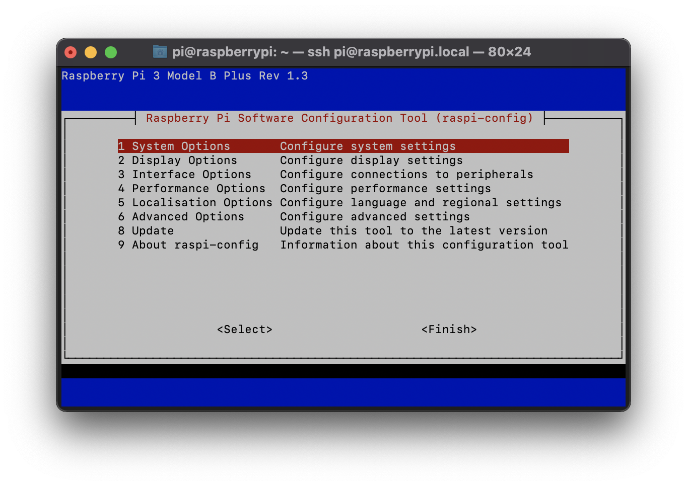
するとターミナルの画面が上記のように変わります。VNCの設定を変更するために「3 Interface Options」を選択します。選択は矢印キーとエンターキーで行います。
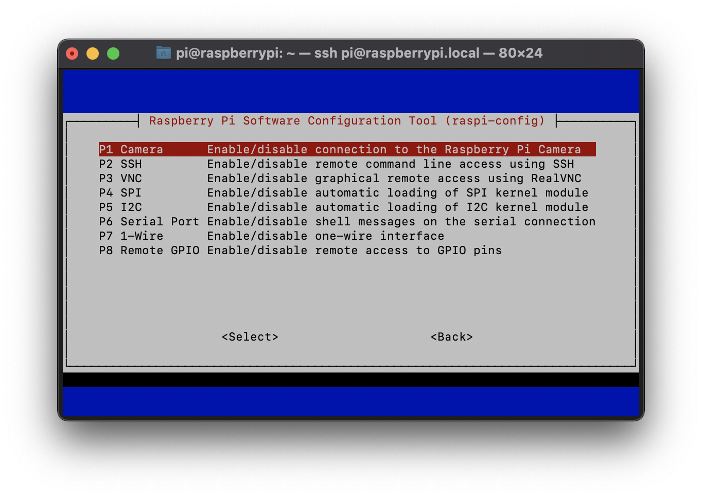
次に上記の画面が表示されます。「P3 VNC」を選択します。
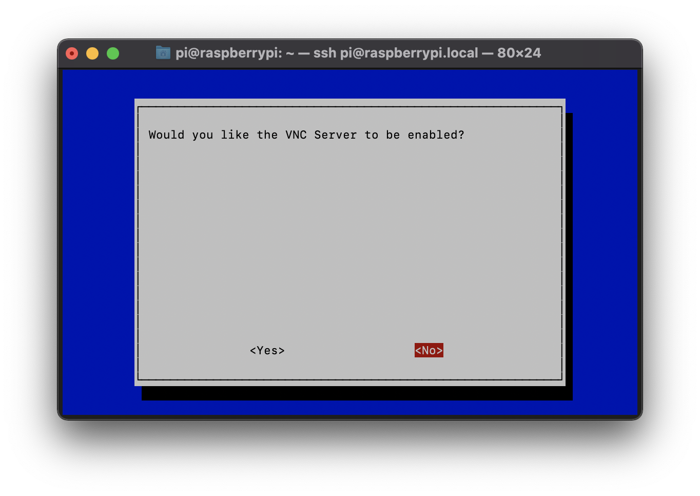
すると「VNCサーバーを有効化しますか？」と尋ねられるので、「Yes」を選択してエンターキーを押します。
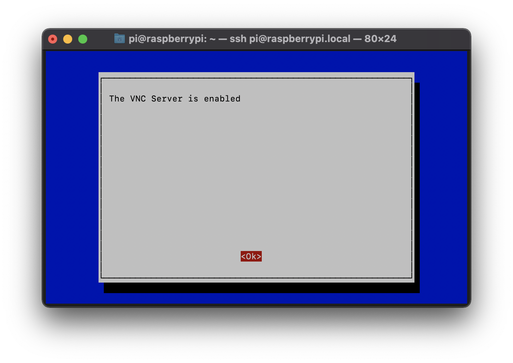
短い間にコマンドラインが表示され、「VNCサーバーが有効になりました」と表示されます。この画面では「OK」を押して終了します。
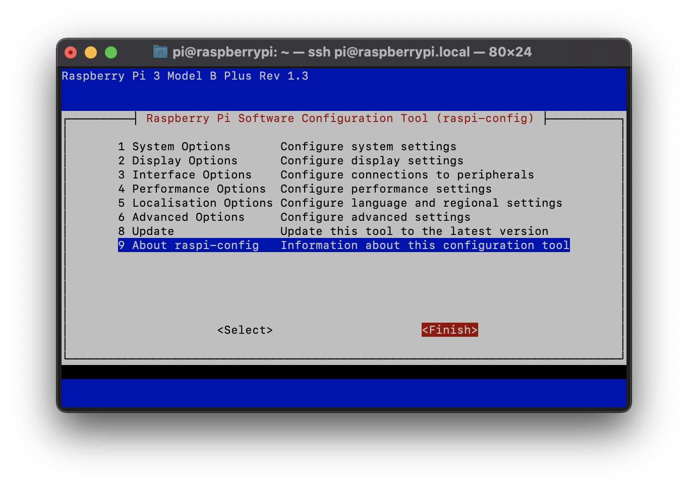
最初の画面に戻り、左右キーで「Finish」を選択し、エンターキーを押します。するとコマンドラインの画面に戻ります。
この設定により、次回以降の起動時には自動的にVNCサーバーが起動します。また、MacからVNC接続が可能になります。なお、ここではVNC Viewerを利用して接続しますが、VNC ViewerをMacにインストールする手順は割愛します。ダウンロードしたdmgファイルを開いてアプリケーションにインストールするだけなので、とくに詳細な説明は必要ないかと思います。
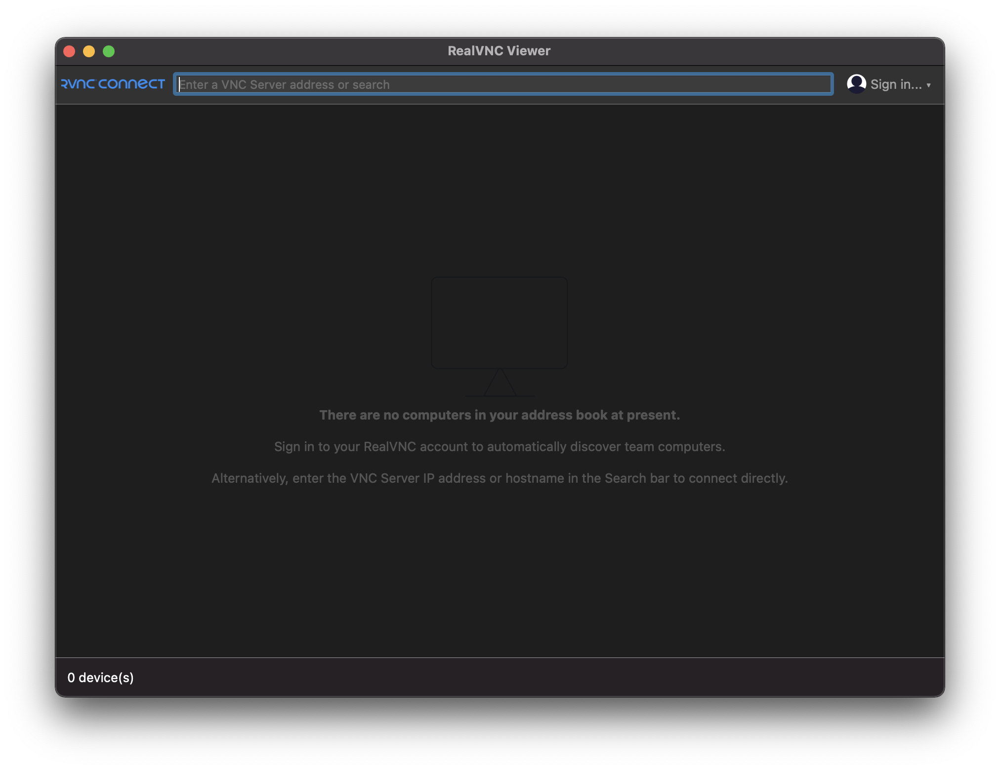
VNC Viewerを起動すると上記の画面が表示されます。アドレスバーにraspberrypi.localと入力してエンターキーを押します。すると「接続を続行しますか？」と尋ねられるので「Continue」をクリックします。
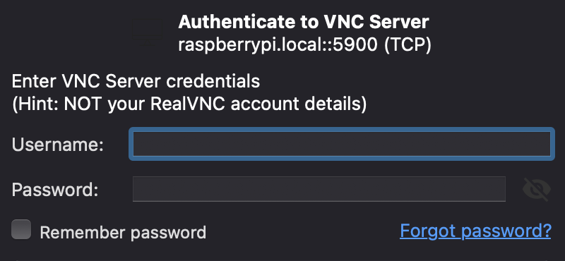
すると、上記のようなユーザー名とパスワードを入力する画面が表示されます。
これまで新しいユーザーを作成していない場合は、上記の情報を入力してエンターキーを押します。
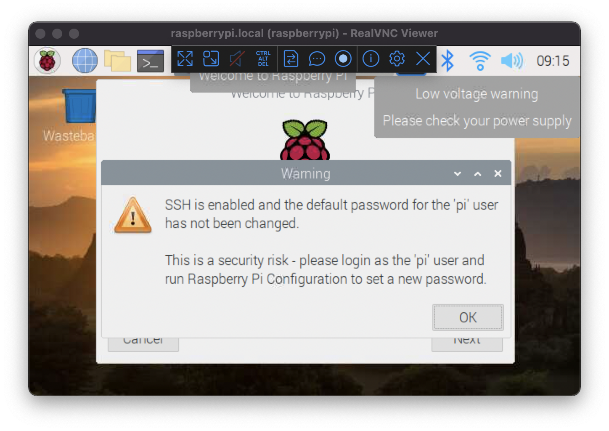
ログインすると、上記のようにラズパイの画面がVNC Viewer上に表示されます。これで、Macのマウスやキーボードからラズパイを操作できるようになります。
piのパスワード変更など、必要な設定をこのウィザードで行えます。
piを無効化したり、新しいユーザーを設定しておくことも重要です。sudo shutdown -h nowかsudo poweroffが利用できます。